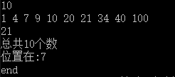

题目：
你是一名合格的图书管理员，你必须能够在一排(10000以内)已按编号大小排好序的图书中，
快速地按照编号查找某本书所在的位置
输入格式:
输入第一行是N，表示有N个元素，第二行是N个数,第三行是M表示要查找的数(第二行数字之间用空格隔开且最后一个数字不能有空格)
输出格式:
一个数，如果找到该数则输出位置否则输出-1
输入例子：
3
2 4 6
4
输出例子：
2
实现思路
递归二分算法
将已经排好序的数列依次存入数组arr里面，设查找的数为M,用指针first表示该数列最左端的位置，用指针end表示该数列
最右端的位置,取得first和end的中间值mid指向该数列的最中间位置，
当end>first时，比较M与arr[mid],有3种可能；
- 若M=arr[mid],表示找到了，退出查找
- 若M<arr[mid],表示需要选择前半段进行查找，first不变，end改变为mid-1
- 若M>arr[mid],表示需要选择后半段进行查找，first变成mid+1,end不变
结束的情况只有两种，找到和未找到，以下代码
1 2 3 4 5 6 7 8 9 10 11 12 13 14 15 16 17 18 19 20 21 22 23 24 25 26 27 28 29 30 31 32 33 34 35 36 37 38 39 40 41 42 43 44 45 46 47 48 49 50 51 52 53 54 55 56 57 58 59 60 61 62 63 64
| process.stdin.setEncoding('utf8'); var count = 0; var i=0; var arr = []; var newArr = []; var m = 0 process.stdin.on('readable', function() { var chunk = process.stdin.read(); if (chunk !== null) { arr.push(chunk) } if(arr.length!=0){ count = parseInt(arr[0]) if(i>2){ process.stdin.emit('end') } } i++ }); function search(first,end){ var mid = 0; if(end>=first){ mid = parseInt((first+end)/2); if(m==newArr[mid-1]){ console.log("总共"+count+"个数"); console.log("位置在:"+mid); return; } else if(m<=newArr[mid-1]){ search(first,mid-1); } else{ search(mid+1,end) } } else{ console.log('-1'); } } function rev(newArr){ var first = 1; var end = newArr.length search(first,end) } process.stdin.on('end', function() { newArr = arr.slice(1,arr.length-1) m = arr[arr.length-1] newArr = newArr.join(" ").split(" ").map(function(index, elem) { return parseInt(index); }) rev(newArr) process.stdout.write('end'); });
|
示例
